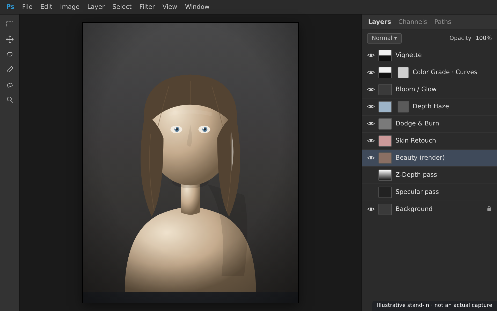
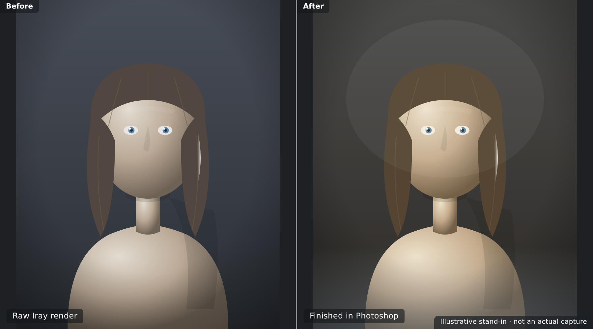

🖌️ Lesson 5.3: The Daz to Photoshop Bridge
Blender and Unreal took your figure's geometry into other 3D tools. Photoshop is a different destination — it's where a finished image gets its final polish. In this lesson you'll bridge your Iray render into Photoshop as pixels, not mesh: exporting render passes and canvases from Daz, stacking them into a layered document, then grading colour, retouching skin, adding depth-based atmosphere, and compositing a background — all without ever baking a change you can't undo. This is the pipeline's finishing room, and the honest truth about how Daz and Photoshop connect.
🎯 Learning Objectives
By the end of this lesson, you will be able to:
- Explain why the Photoshop bridge moves a rendered image, not geometry
- Set up render canvases (passes) in Daz Studio's Advanced Render Settings
- Open a render in Photoshop and build a non-destructive layer stack
- Colour-grade with adjustment layers and refine light with dodge & burn
- Use the depth pass to add atmosphere or depth of field
- Composite a background behind a masked character
- Follow a reliable, reversible finishing workflow and export a final image
Estimated Time: 55 minutes
Project: Your Iray render taken into Photoshop as a layered document — graded, lightly retouched, given depth-based atmosphere and a composited background — exported as a finished, portfolio-ready image.
In This Lesson
Why Finish in Photoshop
Iray gives you a beautiful raw render — but almost every professional image gets a finishing pass in a 2D editor afterwards. That last ten percent is where a render becomes a picture: the colour is graded for mood, distracting blemishes are cleaned up, light is nudged to guide the eye, atmosphere is added for depth, and a background is composited in. Photoshop is the classic home for that work.
💡 The one-sentence version: The Daz to Photoshop "bridge" carries your finished render into Photoshop — as a flat image or as separated passes — so you can grade, retouch, and composite it into a final picture.
📖 Definition
Post-processing: everything you do to a rendered image after the render finishes — colour grading, retouching, compositing, sharpening, adding grain or atmosphere. It's a 2D, pixel-level craft, and it's distinct from the 3D work of posing, surfacing, and lighting.
You already did a little of this in Lesson 3.3 — the denoiser and a light grade on the way out of Daz. Photoshop is where that idea grows up: non-destructive, layer-based, and far more powerful. It's also where 3D art meets graphic design — adding type for a poster, building a matte-painting background, or assembling several renders into one scene.
💡 When you might skip Photoshop
If Iray already gave you exactly what you wanted, you don't have to touch Photoshop — a great render can stand alone. Reach for it when the image needs mood (grading), cleanup (retouching), depth (atmosphere), or context (a composited background) that's faster or only possible in 2D.
A Different Kind of Bridge
Here's the honest part, and it matters: the Photoshop connection is not the same as the Blender and Unreal bridges. Those move your 3D character — mesh, rig, and materials — live into another 3D app. Photoshop is a 2D image editor, so what crosses the bridge is the rendered image (pixels), optionally split into passes. There is no live "Send To → Photoshop" that hands over geometry.
⚠️ Watch Out — Photoshop's old 3D features are gone
Photoshop once had a built-in 3D engine that could import OBJ/FBX models, and you'll still find old tutorials using it. Adobe deprecated and then removed those 3D features, so don't plan a modern workflow around importing a Daz figure as geometry into Photoshop. The supported, future-proof path is render-based: bring in the image, not the mesh.
That's not a limitation so much as a division of labour. Geometry belongs in your 3D tools; Photoshop is superb at the image. Understanding this keeps you from chasing a workflow that no longer exists — and points you at the one that's fast, reliable, and industry-standard.
⚠️ Important Note: Because the bridge is one-way and pixel-based, Photoshop edits never travel back to Daz, and you can't re-pose or re-light a character in Photoshop. If the pose or lighting is wrong, fix it in Daz and re-render — post-processing polishes a good render, it doesn't rescue a broken one.
Render Passes & Canvases
The simplest bridge is one file: render your image and save it as a PNG or TIFF, then open it in Photoshop. That's completely valid and it's where most people start. But Daz can hand Photoshop far more to work with by exporting render canvases — separate passes that isolate parts of the render.
📖 Definition
Render Canvas (pass): an extra image layer Iray outputs alongside the main "Beauty" render, isolating one component — the diffuse colour, the specular highlights, a depth map, and so on. You enable canvases in Render Settings → Advanced, and they save as high-dynamic-range .exr files that Photoshop can open.
Passes you'll actually use
| Canvas / pass | What it holds | What you do with it in Photoshop |
|---|---|---|
| Beauty | The full, final render | Your base layer — everything else refines it |
| Depth (Z) | Distance from camera, as greyscale | Mask for haze/fog and depth-of-field blur |
| Diffuse | Surface colour without highlights | Re-grade colour independently of shine |
| Specular / Glossy | Just the highlights & reflections | Boost or tame shine; add bloom on a Screen layer |
| Normal | Surface direction, as RGB | Advanced relighting and selection tricks |
| Object / Material ID | Flat colours per object or surface | Instant selections/masks for the figure, hair, eyes |
✅ Pro Tip — start with two canvases: Beauty + Depth
You don't need every pass. For most portraits, the Beauty render plus a Depth canvas already unlock the big wins: overall grading on Beauty, and believable atmosphere or depth-of-field driven by Depth. Add Specular and an ID pass only when a shot calls for them.
⚠️ Important Note: Canvases are saved as 32-bit EXR files. When you bring them into Photoshop the document may open in 32-bit mode, where some tools are unavailable — convert to 16-bit (Image → Mode → 16 Bits/Channel) once you've set exposure so the full toolset is available.
Into Photoshop: The Layer Stack
Open the Beauty render (and any canvases) in Photoshop and you're in familiar territory: a layer stack. The golden rule of finishing is non-destructive — you stack adjustments above the render rather than painting on it, so every choice stays editable.

📖 Definition
Adjustment layer: a special layer that applies an effect — Curves, Levels, Hue/Saturation, Colour Balance — to everything beneath it without altering those pixels. It carries its own layer mask, so you can paint the effect in or out of specific areas. It's the backbone of reversible finishing.
The three tools that do most of the work
- Adjustment layers — Curves and Colour Balance for grade; Hue/Saturation for targeted colour.
- Layer masks — black hides, white reveals; paint to confine any layer to eyes, skin, or background.
- Blend modes — Screen to add light (glow, specular), Multiply to deepen shadows, Soft Light for contrast.
💡 Smart Objects keep the render editable
Place the render as a Smart Object and filters like sharpening or Camera Raw become Smart Filters — re-editable any time. It's one more way to keep the whole document reversible, which is exactly the mindset that separates a clean finish from a baked-in mistake.
Finishing Moves
With the stack in place, finishing is a handful of repeatable moves. You won't use all of them on every image — reach for the ones the picture needs.
Colour grade
A Curves or Colour Balance adjustment sets the mood — warm and golden, cool and moody, high-contrast and punchy. Grade last-ish, and grade gently; small moves read as intentional, big ones read as a filter.
Dodge & burn
Lightening (dodge) and darkening (burn) small areas sculpts where the eye goes — brighten a catchlight, deepen a shadow under the jaw. Do it non-destructively on a 50%-grey Soft Light layer so it's fully reversible.
Skin retouch
Iray skin is already excellent, so retouching is usually light: a Healing Brush on a blank layer (set to "Sample All Layers") to remove a stray artifact or seam. Resist over-smoothing — plastic skin is the classic tell of heavy-handed post.
Depth-based atmosphere
This is where the Depth canvas earns its keep. Load it as a layer mask on a soft haze layer and distance instantly fades to atmosphere; or use it with Lens Blur (Filter → Blur → Lens Blur, set the Depth pass as the source) for believable depth of field without re-rendering.
Composite a background
Drop a new backdrop behind the character and mask the figure out cleanly — the Object ID pass (or a quick Select Subject) makes the selection almost free. Match the new background's colour and light direction to the figure so the composite reads as one image.
✅ Pro Tip — finish with the "polish trio"
Almost every image ends the same three ways: a subtle vignette to focus the eye, a whisper of grain to unify the surfaces, and a light sharpen (High Pass or Smart Sharpen) for crispness. Keep all three gentle — they're seasoning, not the meal.
⚠️ Important Note: Work at the render's full resolution and in 16-bit where you can — grading pushes tones hard, and 8-bit files can band (show stepped gradients) in skies and soft skin. Convert to 8-bit only at the very end, on export.
A Photoshop Workflow
Put the moves in order and finishing becomes routine. The same short pipeline works for a quick grade or a full composite.
| Step | Do this | Why |
|---|---|---|
| 1. Render | Render the Beauty pass; enable a Depth (and any) canvas | Gives Photoshop the raw material to work with |
| 2. Open & stack | Open in Photoshop; place passes as layers; set 16-bit | A clean, non-destructive base to build on |
| 3. Retouch | Heal stray artifacts on a separate layer | Cleanup before grading, so the grade sees final pixels |
| 4. Grade | Curves / Colour Balance for mood; dodge & burn | Sets the emotional tone and guides the eye |
| 5. Depth & composite | Add atmosphere/DOF from Depth; composite a background | Builds depth and context around the figure |
| 6. Polish & export | Vignette, grain, sharpen; export PNG/JPG (sRGB) | Final unification and a share-ready file |

💡 Keep Daz as the master, Photoshop as the finish
Just like the other bridges, the flow is one-way: your Daz scene stays the master. If the character or lighting changes, re-render and re-open. Save your Photoshop work as a layered PSD so the finish itself is re-editable — two clear homes, 3D authoring in Daz and 2D finishing in Photoshop.
Hands-on: Render to Finished
Let's take one render from Daz all the way to a finished, exported picture — passes, stack, grade, atmosphere, export.
🏋️ Exercise 1: Render with a Depth Canvas
Objective: Output a Beauty render plus a Depth pass.
Steps:
- In Render Settings → Advanced, turn Canvases on and add one canvas set to type Depth.
- Render as usual, then save the image — you'll get the Beauty render plus a
.exrDepth canvas. - Note where the files saved; you'll open both in Photoshop next.
💡 Hint — I don't see a separate Depth file
Confirm Canvases is actually enabled (not just added) in the Advanced tab, that the canvas type is Depth, and that you saved the render (canvases are written on save). Canvases export as .exr next to your image — check the same folder and filename prefix.
🏋️ Exercise 2: Build the Stack & Grade
Objective: Create a non-destructive grade.
Steps:
- Open the Beauty render in Photoshop; if it's 32-bit, set Image → Mode → 16 Bits/Channel.
- Add a Curves adjustment layer and a Colour Balance layer; nudge toward a warmer, moodier look.
- Add a 50%-grey Soft Light layer and gently dodge the eyes/highlights and burn the edges.
🏋️ Exercise 3: Atmosphere & Export
Objective: Use the Depth pass, then export.
Steps:
- Add a soft, light-coloured haze layer; load the Depth pass into its layer mask so haze grows with distance.
- Finish with a subtle vignette, a touch of grain, and a light sharpen.
- Save a layered PSD, then Export As a PNG or JPG in sRGB for sharing.
🎯 Quick Quiz
Question 1: What actually crosses the "bridge" from Daz to Photoshop?
Question 2: You want believable depth-of-field without re-rendering. Which pass helps most?
Question 3: Why grade with adjustment layers instead of editing the render directly?
Best Practices
✅ Do's
- Work non-destructively — adjustment layers, masks, and Smart Objects.
- Render a Depth canvas when you want atmosphere or depth of field.
- Stay in 16-bit while grading; convert to 8-bit only on export.
- Grade gently — small, intentional moves beat heavy filters.
- Keep the Daz scene as the master and save a layered PSD of the finish.
- Match light and colour when compositing a new background.
❌ Don'ts
- Don't try to import the figure as 3D geometry — Photoshop's 3D is gone.
- Don't over-retouch skin — plastic skin ruins a good Iray render.
- Don't fix pose or lighting in post — re-render from Daz instead.
- Don't flatten early — you lose every bit of editability.
- Don't grade in 8-bit if you can avoid it — watch for banding.
💡 Pro Tips
- Start minimal: Beauty + Depth covers most portraits.
- Use an Object/Material ID pass for instant, clean selections.
- Screen the Specular pass back in for controllable bloom on highlights.
- Name and group your layers — future-you will thank present-you.
- Finish with the polish trio: subtle vignette, grain, and sharpen.
Summary
🎉 Key Takeaways
- The Daz to Photoshop bridge is a render-based bridge — it carries the image, not geometry (Photoshop's old 3D import is gone).
- Daz render canvases (Beauty, Depth, Specular, IDs) give Photoshop separated passes to work with; Beauty + Depth covers most shots.
- Finishing is non-destructive: adjustment layers, masks, and blend modes stacked above the render.
- The core moves are grade, dodge & burn, light retouch, depth atmosphere, and compositing, finished with a vignette-grain-sharpen polish.
- Keep Daz as the master and save a layered PSD — the whole finish stays re-editable.
📚 Additional Resources
- Daz Studio — Render Canvases documentation
- Adobe — Adjustment & fill layers
- Adobe — Photoshop 3D features deprecation
🚀 What's Next?
Your figure can now go to Blender, to Unreal, and into a finished picture in Photoshop — the full spread of destinations. It's time to prove it end to end. In Lesson 5.4 — Capstone: A Full Pipeline Portfolio Piece, you'll pose, shape, surface, light, and render a character in Daz, then carry that same figure across the pipeline — one asset, one portfolio piece, every skill in this course working together.
🎉 Your render became a picture!
Passes, layer stack, grading, retouch, depth atmosphere, and compositing — you've bridged Daz's raw render into a finished, non-destructive Photoshop document. Three destinations mastered: Blender, Unreal, and Photoshop. One capstone remains to tie the whole pipeline together.